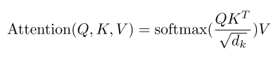
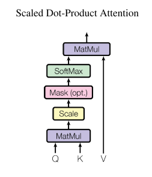
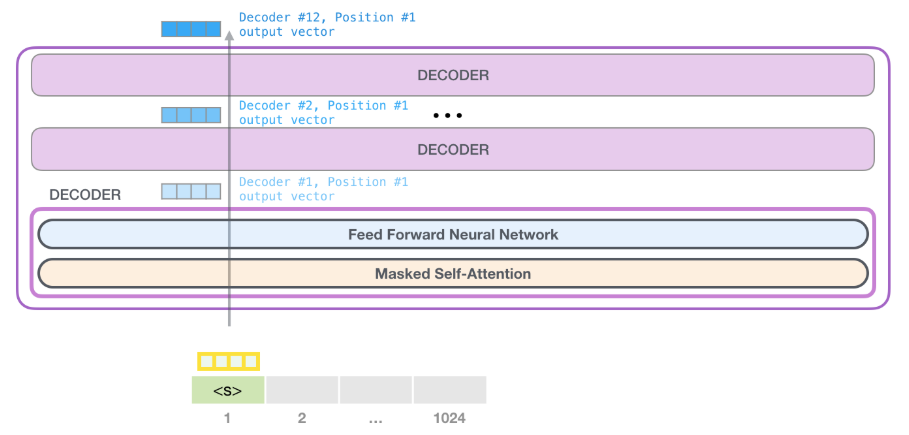

1 Introduction
Welcome to “The Annotated GPT-2”.
One of the most brilliant and well-explained articles I have ever read is The Annotated Transformer. It introduced Attention like no other post ever written. The simple idea was to present an “annotated” version of the paper Attention is all you need along with code.
Something I have come to realize with my little experience in Machine Learning, when you write things in code, the implementation and the secrets become clearer. It is not magic anymore.
There is nothing magic about magic. The magician merely understands something simple which doesn’t appear to be simple or natural to the untrained audience. Once you learn how to hold a card while making your hand look empty, you only need practice before you, too, can “do magic.”
– Jeffrey Friedl in the book Mastering Regular Expressions
The GPT-2 might seem like magic at first with all it’s glitter and beauty too, but hopefully I would have uncovered that magic for you and revealed all the tricks by the time you finish reading this post. That is my goal. To make it as simple as possible for the keen to understand how the GPT-2 model works underneath.
Note: Pretty much the entirety of the code has been copied, inspired and referenced from Hugging Face’s implementation of the GPT-2, keeping merely the essentials for simplicity. If you want to train the GPT-2 model on parallel GPUs, save checkpoints while fine-tuning, run inference tasks on multiple CPUs and much more, I would recommend using the Hugging Face API. A simple tutorial on how to do so was recently released by Hugging Face and can be found here.
In this post, I am not trying to reinvent the wheel, but merely bringing together a list of prexisting excellent resources to make it easier for the reader to grasp GPT-2. I leave it up to the reader to further build upon these foundations in any area they choose.
You can’t build a great building on a weak foundation. You must have a solid foundation if you’re going to have a strong superstructure.
– Gordon B. Hinckley
2 Prerequisites
This post assumes that the reader has a solid understanding of Attention and Transformers. The GPT-2 utilizes a 12-layer Decoder Only Transformer architecture. If you want a refresher or understand Attention and Transformers, here is an excellent list of resources to aid your understanding regarding:
- The illustrated Transformer by Jay Alammar
- The Annotated Transformer by Harvard NLP
- Introduction to the Transformer by Rachel Thomas and Jeremy Howard
If you’re just beginning your journey into NLP or you’re an expert, I would definitely recommend the fast.ai NLP course taught by Rachel Thomas and Jeremy Howard. The course starts with the basics including Sentiment Classification using Naive Bayes and Logistic Regression, moves on to RNNs and also talks about Transfer Learning, ULMFiT, Seq2Seq translation and Transformers amongst other things. It is an excellent resource put together by the fast.ai team free of cost.
Another amazing resource on GPT-2 itself, is The Illustrated GPT-2 by Jay Alammar. This post starts with a basic introduction to Language Models and explains the GPT-2 model step-by-step in a very easy to understand manner. I would highly recommend the reader to give this post a read.
The Annotated Transformer by Harvard NLP implements the complete Transformer architecture using PyTorch and is great way to understand Attention in depth.
Let’s then build upon these excellent existing resources and implement GPT-2 in code.
3 Abstract
Natural language processing tasks, such as question answering, machine translation, reading comprehension, and summarization, are typically approached with supervised learning on taskspecific datasets. We demonstrate that language models begin to learn these tasks without any explicit supervision when trained on a new dataset of millions of webpages called WebText. Our largest model, GPT-2, is a 1.5B parameter Transformer that achieves state of the art results on 7 out of 8 tested language modeling datasets in a zero-shot setting but still underfits WebText. Samples from the model reflect these improvements and contain coherent paragraphs of text. These findings suggest a promising path towards building language processing systems which learn to perform tasks from their naturally occurring demonstrations.
A Zero-shot setting is one where you do not finetune the language model and directly run inference on the target dataset. For example, pretrain a LM on WebText and directly try and predict the next words of Amazon Movie reviews dataset.
4 Model Architecture (GPT-2)
We use a Transformer (Vaswani et al., 2017) based architecture for our LMs. The model largely follows the details of the OpenAI GPT model (Radford et al., 2018) with a few modifications. Layer normalization (Ba et al., 2016) was moved to the input of each sub-block, similar to a pre-activation residual network (He et al., 2016) and an additional layer normalization was added after the final self-attention block. We scale the weights of residual layers at initialization by a factor of 1/√N where N is the number of residual layers. The vocabulary is expanded to 50,257 words. We also increase the context size from 512 to 1024 tokens and a larger batchsize of 512 is used.
This is the entirety of model explanation inside the
GPT-2research paper. This warrants a need for us to look at the architecture inside theGPTmodel.
5 Model Specifications (GPT)
Our model largely follows the original transformer work. We trained a 12-layer decoder-only transformer with masked self-attention heads (768 dimensional states and 12 attention heads). For the position-wise feed-forward networks, we used 3072 dimensional inner states. We used the Adam optimization scheme with a max learning rate of 2.5e-4. The learning rate was increased linearly from zero over the first 2000 updates and annealed to 0 using a cosine schedule. We train for 100 epochs on minibatches of 64 randomly sampled, contiguous sequences of 512 tokens. Since layernorm is used extensively throughout the model, a simple weight initialization of N(0, 0.02) was sufficient. We used a bytepair encoding (BPE) vocabulary with 40,000 merges and residual, embedding, and attention dropouts with a rate of 0.1 for regularization. We also employed a modified version of L2 regularization proposed in, with w = 0.01 on all non bias or gain weights. For the activation function, we used the Gaussian Error Linear Unit (GELU).

As can be seen from the
GPT Architecture, to implement it, we will first need to implementMasked Self AttentionandFeed Forwardlayer.
6 Imports
import torch
import copy
import torch.nn as nn
import torch.nn.functional as F
from torch.nn.modules import ModuleList
from torch.nn.modules.normalization import LayerNorm
import numpy as np
import os
from tqdm import tqdm_notebook, trange
import logging
logging.basicConfig(level = logging.INFO)
logger = logging.getLogger()7 Transformer Decoder inside GPT-2
To re-use the terminology used to describe the Transformer, the attention is a function of a query (Q) and set of key (K) and value (V) pairs. To handle longer sequences, we modify the multi-head self-attention of the Transformer to reduce memory usage by limiting the dot products between Q and K in:

class Conv1D(nn.Module):
def __init__(self, nx, nf):
super().__init__()
self.nf = nf
w = torch.empty(nx, nf)
nn.init.normal_(w, std=0.02)
self.weight = nn.Parameter(w)
self.bias = nn.Parameter(torch.zeros(nf))
def forward(self, x):
size_out = x.size()[:-1] + (self.nf,)
x = torch.addmm(self.bias, x.view(-1, x.size(-1)), self.weight)
x = x.view(*size_out)
return x7.1 CONV1D Layer Explained
The CONV1D layer can be thought of as a LINEAR layer itself. Essentially, it is casting an initial tensor x (having the final dimension of x.size(-1)) being passed to it to have a final dimension of size self.nf.
Here’s an example output of the same:
d_model = 768
conv1d = Conv1D(d_model, d_model*3)
x = torch.rand(1,4,d_model) #represents a sequence of batch_size=1, seq_len=4 and embedding_sz=768, something like "Hello how are you"
x = conv1d(x)
x.shape
>> torch.Size([1, 4, 2304])As can be seen in the example above, the final dimension of tensor returned by CONV1D is 3 times the initial size. We do this to be able to cast the input to query, key and value matrices.
It is possible then to retrieve the query, key and value matrices like so:
query, key, value = x.split(d_model, dim=-1)
query.shape, key.shape, value.shape
>> (torch.Size([1, 4, 768]), torch.Size([1, 4, 768]), torch.Size([1, 4, 768]))Another way to cast the input to
Q,KandVmatrices would have to been to have separateWq,WkandWvmatrices. I have explained this under the EXTRA section of this post at the bottom. I find this other approach more intuitive and relatable, but we use theCONV1Dlayer in this post, because we reuse theCONV1Dpretrained weights from Hugging Face.
7.2 FEEDFORWARD Layer Explained
class FeedForward(nn.Module):
def __init__(self, dropout, d_model=768, nx=768*4):
super().__init__()
self.c_fc = Conv1D(d_model, nx)
self.c_proj = Conv1D(nx, d_model)
self.act = F.gelu
self.dropout = nn.Dropout(dropout)
def forward(self, x):
return self.dropout(self.c_proj(self.act(self.c_fc(x))))Something, that’s just so well explained in Jay Alammar’s post - also referenced above, is how the inputs are passed through ATTENTION layer first and then on to FEEDFORWARD layer. The Feedforward network, is a normal neural network that accepts the outputs from the ATTENTION layer (768), casts them to nx (768*4) dimension, adds an activation function self.act (GELU), casts them back to d_model (768) and adds dropout (0.1).
This is also mentioned in the GPT research paper referenced below. > For the position-wise feed-forward networks, we used 3072 dimensional inner states
7.3 ATTENTION Layer Explained
The below extract is from the paper Attention is all you need.
7.3.1 Scaled Dot-Product Attention
We call our particular attention “Scaled Dot-Product Attention”. The input consists of queries and keys of dimension dk, and values of dimension dv. We compute the dot products of the query with all keys, divide each by √dk, and apply a softmax function to obtain the weights on the values.

In practice, we compute the attention function on a set of queries simultaneously, packed together into a matrix Q. The keys and values are also packed together into matrices K and V . We compute the matrix of outputs as:
The two most commonly used attention functions are additive attention, and dot-product (multiplicative) attention. Dot-product attention is identical to our algorithm, except for the scaling factor of 1/√dk. Additive attention computes the compatibility function using a feed-forward network with a single hidden layer. While the two are similar in theoretical complexity, dot-product attention is much faster and more space-efficient in practice, since it can be implemented using highly optimized matrix multiplication code. While for small values of dk the two mechanisms perform similarly, additive attention outperforms dot product attention without scaling for larger values of dk. We suspect that for large values of dk, the dot products grow large in magnitude, pushing the softmax function into regions where it has extremely small gradients. To counteract this effect, we scale the dot products by 1/√dk.
To implement the The Attention layer in code, we first utilize the
CONV1Dlayer and get theq,kandvmatrices as explained before.Once we have the
q,kandvmatrices, we can perform attention using the function_attn. This function replicates the formula mentioned above insideAttention Dot Product.
class Attention(nn.Module):
def __init__(self, d_model=768, n_head=12, n_ctx=1024, d_head=64, bias=True, scale=False):
super().__init__()
self.n_head = n_head
self.d_model = d_model
self.c_attn = Conv1D(d_model, d_model*3)
self.scale = scale
self.softmax = nn.Softmax(dim=-1)
self.register_buffer("bias", torch.tril(torch.ones(n_ctx, n_ctx)).view(1, 1, n_ctx, n_ctx))
self.dropout = nn.Dropout(0.1)
self.c_proj = Conv1D(d_model, d_model)
def split_heads(self, x):
"return shape [`batch`, `head`, `sequence`, `features`]"
new_shape = x.size()[:-1] + (self.n_head, x.size(-1)//self.n_head)
x = x.view(*new_shape)
return x.permute(0, 2, 1, 3)
def _attn(self, q, k, v, attn_mask=None):
scores = torch.matmul(q, k.transpose(-2, -1))
if self.scale: scores = scores/math.sqrt(v.size(-1))
nd, ns = scores.size(-2), scores.size(-1)
if attn_mask is not None: scores = scores + attn_mask
scores = self.softmax(scores)
scores = self.dropout(scores)
outputs = torch.matmul(scores, v)
return outputs
def merge_heads(self, x):
x = x.permute(0, 2, 1, 3).contiguous()
new_shape = x.size()[:-2] + (x.size(-2)*x.size(-1),)
return x.view(*new_shape)
def forward(self, x):
x = self.c_attn(x) #new `x` shape - `[1,3,2304]`
q, k, v = x.split(self.d_model, dim=2)
q, k, v = self.split_heads(q), self.split_heads(k), self.split_heads(v)
out = self._attn(q, k, v)
out = self.merge_heads(out)
out = self.c_proj(out)
return outAnother way to implement
Attentionis explained in theExtrassection at the bottom of this blog. I find it to be more intuitive and easy to compare with the research paper. It utilizes Linear layers instead ofCONV1Dto cast inputs toQ,KandVmatrices. The reason why we haven’t used it is because we use the pretrained weights forCONV1Dlayer from Hugging Face.
7.3.2 Multi-Head Attention
The below extract is from the paper Attention is all you need.
Instead of performing a single attention function with dmodel-dimensional keys, values and queries, we found it beneficial to linearly project the queries, keys and values h times with different, learned linear projections to dk, dk and dv dimensions, respectively. On each of these projected versions of queries, keys and values we then perform the attention function in parallel, yielding dv-dimensional output values. These are concatenated and once again projected, resulting in the final values, as depicted in Figure below.

Multi-head attention allows the model to jointly attend to information from different representation subspaces at different positions. With a single attention head, averaging inhibits this.

In this work we employ h = 8 parallel attention layers, or heads. For each of these we use dk = dv = dmodel/h = 64. Due to the reduced dimension of each head, the total computational cost is similar to that of single-head attention with full dimensionality.
Not to be confused by this, in essence all that’s being done is to add another dimension to the
Q,KandVmatrices. That is, if the matrices were before of size[1, 4, 768]which represents[bs, seq_len, d_model], these matrices are projected to dimension[1, 12, 4, 64]which represents[bs, n_head, seq_len, d_model//n_head]. GPT-2 utizes 12 parallel heads. We split theQ,K,Vmatrices insidesplit_headsfunction. Finally, once we get an output from applying parallel attentions we concatenate it insidemerge_headsback to matrices of dimension[bs, seq_len, d_model].
8 GPT-2 Model Architecture in Code
So far, we have implemented Multi Head Attention and FeedForward layers. The two layers form the building blocks of the Transformer Decoder block, shown in the picture above. The GPT-2 consists of 12 of these Transformer Blocks.
This has been shown in Jay Alammar’s post like so: 
8.1 Transformer Decoder Block Explained
class TransformerBlock(nn.Module):
def __init__(self, d_model=768, n_head=12, dropout=0.1):
super(TransformerBlock, self).__init__()
self.attn = Attention(d_model=768, n_head=12, d_head=64, n_ctx=1024, bias=True, scale=False)
self.feedforward = FeedForward(dropout=0.1, d_model=768, nx=768*4)
self.ln_1 = LayerNorm(d_model)
self.ln_2 = LayerNorm(d_model)
def forward(self, x):
x = x + self.attn(self.ln_1(x))
x = x + self.feedforward(self.ln_2(x))
return xThe Transformer Block consists of Attention and FeedForward Layers. As referenced from the GPT-2 Architecture Model Specification, > Layer normalization (Ba et al., 2016) was moved to the input of each sub-block Here are the sub-blocks are Attention and FeedForward.
Thus, inside a Transformer Decoder Block, essentially we first pass the inputs to a LayerNorm followed by the first sub-block Attention. Next, we pass the outputs of this sub-block to LayerNorm again and finally to FeedForward layer.
9 The GPT-2 Architecture Explained
As referenced from the GPT paper,
We trained a 12-layer decoder-only transformer with masked self-attention heads (768 dimensional states and 12 attention heads).
Thus, the complete GPT-2 architecture is the TransformerBlock copied over 12 times.
def _get_clones(module, n):
return ModuleList([copy.deepcopy(module) for i in range(n)])
class GPT2(nn.Module):
def __init__(self, nlayers=12, n_ctx=1024, d_model=768, vcb_sz=50257):
super(GPT2, self).__init__()
self.nlayers = nlayers
block = TransformerBlock(d_model=768, n_head=12, dropout=0.1)
self.h = _get_clones(block, 12)
self.wte = nn.Embedding(vcb_sz, d_model)
self.wpe = nn.Embedding(n_ctx, d_model)
self.drop = nn.Dropout(0.1)
self.ln_f = LayerNorm(d_model)
self.out = nn.Linear(d_model, vcb_sz, bias=False)
self.loss_fn = nn.CrossEntropyLoss()
self.init_weights()
def init_weights(self):
self.out.weight = self.wte.weight
self.apply(self._init_weights)
def _init_weights(self, module):
if isinstance(module, (nn.Linear, nn.Embedding, Conv1D)):
module.weight.data.normal_(mean=0.0, std=0.02)
if isinstance(module, (nn.Linear, Conv1D)) and module.bias is not None:
module.bias.data.zero_()
elif isinstance(module, nn.LayerNorm):
module.bias.data.zero_()
module.weight.data.fill_(1.0)
def forward(self, src, labels=None, pos_ids=None):
if pos_ids is None: pos_ids = torch.arange(0, src.size(-1)).unsqueeze(0)
inp = self.drop((self.wte(src)+self.wpe(pos_ids)))
for i in range(self.nlayers): inp = self.h[i](inp)
inp = self.ln_f(inp)
logits = self.out(inp)
outputs = (logits,) + (inp,)
if labels is not None:
shift_logits = logits[..., :-1, :].contiguous()
shift_labels = labels[..., 1:].contiguous()
loss = self.loss_fn(shift_logits.view(-1, shift_logits.size(-1)), shift_labels.view(-1))
outputs = (loss,) + outputs
return outputs
return logitsSomething I have not mentioned yet is
Positional EncodingandToken Embeddings. Since, we cannot pass words such as “hey” or “hello” directly to the model, we firstTokenizeour inputs. Next, we useEmbeddingsto represent the tokens as numbers. This post by Jay Alammar again explains Embeddings very well.Also, since unlike the RNNs where the input words are passed sequentially, Transformers take input matrices in parallel thus losing the sense of position for the words being input. To make up for the loss, before handling the
Token Embeddingsto the model, we addPositional Encoding- a signal that indicates the order of the words in the sequence. Since, as mentioned before, the context size of GPT-2 is 1024, the positional encodings are of dimensions[1024, 768].
")
Thus, the inputs to the GPT-2 architecture is the sum of Token Embeddings and Positional Encodings passed through a Dropout, to add regularization. Once, we have the input matrix, we pass this through each of the 12 Layers of the GPT-2 architecure, where each layer is a Transformer Decoder Block that consists of two sublayers - Attention and FeedForward Network.
9.0.1 Language Modeling or Classification
When using GPT-2 as a language model, we pass the inputs to a final LayerNorm and through a Linear layer with a final dimension of size [768, vocab_sz] (50257) and get an output of size [1, 4, 50257]. This output represents the next word logits and we can very easily now pass this through a Softmax layer and take argmax to get the positional of the word inside the vocabulary with the highest probability.
For classification task, we can pass the outputs received from the GPT-2 architecture through a Linear layer with a dimension of size [768, n] to get probabilities for each category (where n represents number of categories), pass it through a softmax, get the highest predicted category and use CrossEntropyLoss to train the architecture to do classification.
And that’s really all the magic behind GPT-2. It’s a Decoder only Transformer Based architecture that takes inputs parallely with Positional Encodings unlike RNNs, passes them through each of it’s 12 Transformer Decoder layers (which consist of Multi head Attention and FeedForward Network) to return the final output.
Let’s see this model in action in a language model task.
10 Sample text generation using Hugging Face Pretrained Weights
First, let’s initialize the model with the Pretrained Weights already provided by Hugging Face.
model = GPT2()
# load pretrained_weights from hugging face
# download file https://s3.amazonaws.com/models.huggingface.co/bert/gpt2-pytorch_model.bin to `.`
model_dict = model.state_dict() #currently with random initialization
state_dict = torch.load("./gpt2-pytorch_model.bin") #pretrained weights
old_keys = []
new_keys = []
for key in state_dict.keys():
if "mlp" in key: #The hugging face state dict references the feedforward network as mlp, need to replace to `feedforward` be able to reuse these weights
new_key = key.replace("mlp", "feedforward")
new_keys.append(new_key)
old_keys.append(key)
for old_key, new_key in zip(old_keys, new_keys):
state_dict[new_key]=state_dict.pop(old_key)
pretrained_dict = {k: v for k, v in state_dict.items() if k in model_dict}
model_dict.update(pretrained_dict)
model.load_state_dict(model_dict)
model.eval() #model in inference mode as it's now initialized with pretrained weightsLet’s now generate text. We will utilize Hugging Face’s pretrained Tokenizer to convert words to input embeddings.
from transformers import GPT2Tokenizer
tokenizer = GPT2Tokenizer.from_pretrained("gpt2")
context = torch.tensor([tokenizer.encode("The planet earth")])
def generate(context, ntok=20):
for _ in range(ntok):
out = model(context)
logits = out[:, -1, :]
indices_to_remove = logits < torch.topk(logits, 10)[0][..., -1, None]
logits[indices_to_remove] = np.NINF
next_tok = torch.multinomial(F.softmax(logits, dim=-1), num_samples=1).squeeze(1)
context = torch.cat([context, next_tok.unsqueeze(-1)], dim=-1)
return context
out = generate(context, ntok=20)
tokenizer.decode(out[0])
>> 'The planet earth is the source of all of all the light," says the study that the government will'11 Extras
Another way to implement Attention as shown in the NLP Course by fast.ai referenced from here, that I find to be more intuitive is as below:
class Attention_FASTAI(nn.Module):
def __init__(self, d_model=768, n_head=12, d_head=64, n_ctx=1024, bias=True, scale=False):
super().__init__()
self.n_head = n_head
self.d_head = d_head
self.softmax = nn.Softmax(dim=-1)
self.scale = scale
self.atn_drop = nn.Dropout(0.1)
self.wq, self.wk, self.wv = [nn.Linear(d_model, n_head*d_head,
bias=bias) for o in range(3)]
def split_heads(self, x, layer, bs):
x = layer(x)
return x.view(bs, x.size(1), self.n_head, self.d_head).permute(0,2,1,3)
def _attn(self, q, k, v, attn_mask=None):
scores = torch.matmul(q, k.transpose(-2, -1))
if self.scale: scores = scores/math.sqrt(v.size(-1))
if attn_mask is not None:
scores = scores.float().masked_fill(attn_mask, -float('inf')).type_as(scores)
attn_prob = self.atn_drop(self.softmax(scores))
attn_vec = attn_prob @ v
return attn_vec
def merge_heads(self, x, bs, seq_len):
x = x.permute(0, 2, 1, 3).contiguous()
return x.view(bs, seq_len, -1)
def forward(self, q, k, v, mask=None):
bs, seq_len = q.size(0), q.size(1)
wq, wk, wv = map(lambda o:self.split_heads(*o, bs),
zip((q,k,v), (self.wq, self.wk, self.wv)))
attn_vec = self._attn(wq, wk, wv)
attn_vec = self.merge_heads(attn_vec, bs, seq_len)
return attn_vecThe key difference between the implementation above and the one we have used is that this implementation does not use CONV1D. Instead, we first pass the input x to self.wq, self.wk and self.wv Linear Layers to get wq, wk and wv matrices and then perform attention as before.
12 Credits
I just want to take the time to thank Rachel Thomas and Jeremy Howard for a great NLP course and the fast.ai course in general, which has helped me bolster my understanding of RNNs, GRUs, AWD-LSTM and Transformers. Also, a special thanks to Hugging Face for creating an open source NLP library and providing a number of Pretrained Models to use. As mentioned the code in this blog post comes directly from the Hugging Face library. And, Jay Alammar for the excellent work that he has been doing to Visualise machine learning concepts. The Illustrated GPT-2 is one of the most comprehensive blog posts on GPT-2. Finally, to Harvard NLP, for The Annotated Transformer, a beautiful and easy to follow implementation of Transformers in PyTorch.
13 Feedback
Comments or feedback? Please tweet me at @amaarora
This is a really wonderful resource, and draws together many very nice pieces of work. https://t.co/CM16ByNrbt
— Jeremy Howard (@jeremyphoward) February 19, 2020
Great work pairing GPT2 concepts with the key excerpts from the code. https://t.co/IkFlAf3Ua8
— Jay Alammar جهاد العمار (@jalammar) February 20, 2020
"The Annotated GPT-2" blogpost seems to start out a a simple question of asking why use conv-1d vs linear.
— Liling Tan (@alvations) February 20, 2020
An awesome read!! https://t.co/GCju0z3Wri
#nlproc #nlposs #distiller https://t.co/cvSdEah8gT
A must-read blog about GPT-2. https://t.co/EuDil5Dm07
— Xinhao Li (@XinhaoLi1) February 20, 2020
One of the best NLP Blogposts I've read: A definitive and complete writeup. 🍵
— Sanyam Bhutani (@bhutanisanyam1) February 20, 2020
This is a blog, I wish I had when I was tinkering with the GPT-2.
Must read for everyone: https://t.co/yLRFywYgm6
Neat! https://t.co/eLt3o180Qr
— Antônio Horta Ribeiro (@ahortaribeiro) February 20, 2020
Fantastic work!! Looking forward to learning what is it behind the scenes of this language model! https://t.co/Ml1DY22NxQ
— Data Enigma (@EnigmaData) February 19, 2020
The Annotated GPT-2 - Understand how the GPT-2 model works underneath with explanations and source code
— Philip Vollet (ﾉ◕ヮ◕)ﾉ*:・ﾟ✧ (@philipvollet) February 20, 2020
Blogpost https://t.co/anLqVhZQPN@amaarora
𝐬𝐩𝐫𝐞𝐚𝐝 𝐭𝐡𝐞 𝐰𝐨𝐫𝐝 𝐨𝐟 #𝐍𝐋𝐏 💜#datascience #pytorch #deeplearning #machinelearning pic.twitter.com/n5QIQBAIfH
This is fantastic @amaarora, thanks 👍
— Manpreet Singh (@ms_ghotratweet) February 20, 2020
This is brilliant stuff!!!
— Arron Hovingham (@AnalystiaArron) February 20, 2020